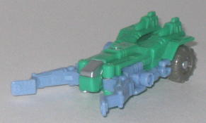
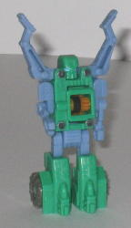
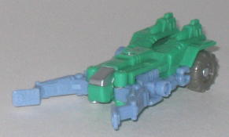
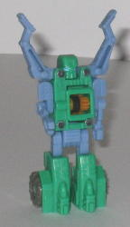
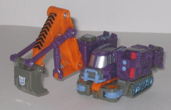
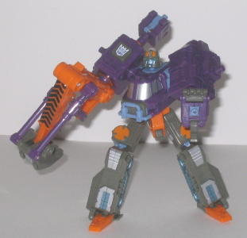
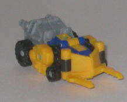
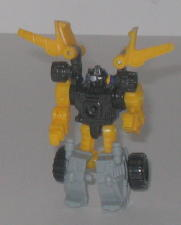
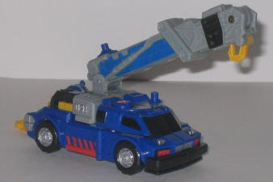
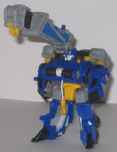

Refute
Refute
 
Allegiance : Minicon
Size : Mini-Con
Difficulty of Transformation : Very Easy
Color Scheme : Leafy green, light pale blue, and some light brownish gray, silver, and light pale orange
Rating : 4.2
Ransack
w/ Refute vs. Smokescreen w/ Liftor ("Battle in a Box"; Secondary Retailer
Exclusive)
Price : $16 (at Meijer's)
(NOTE: Because these sets are repaints, these are not full-blown reviews. They mainly cover any changes made to the mold and the color scheme, and merely compares them to their original molds. For a review of Armada Hoist w/ Refute-- the predecessor to Ransack w/ Refute-- click here . For a review of Armada Smokescreen w/ Liftor-- the predecessor to Universe Smokescreen w/ Liftor-- click here .)
Refute


Allegiance
: Minicon
Size
: Mini-Con
Difficulty of Transformation
: Very
Easy
Color Scheme
: Leafy green, light
pale blue, and some light brownish gray, silver, and light pale orange
Rating
: 4.2
Universe Refute has a
more leafy, nature-esque color scheme when compared to his orange-and-gray
predecessor. The color scheme itself isn't bad-- blue and green work really
well together, as we can obviously see in nature. (The green comes out
much lighter under camera light than it actually is, so it really does
look better than it seems in the above pics.) The gray and orange aren't
used for more than just a few parts each on this toy, so they don't really
clash like they would if they were more prominent. However, even though
the color scheme isn't in itself bad, it's not at all apprpriate for a
Transformer with a tough-looking vehicle mode. Now, if Refute transformed
into a tree, it'd be a different story, but as it is, the color scheme
just doesn't fit the toy.
No mold changes have
been made to Universe Refute.
 Ransack
Ransack


Allegiance
: Decepticon
Size:
Deluxe
Difficulty of Transformation
: Easy
Color Scheme
: Light brownish gray,
dull orange, purple, and some light pale blue, silver, metallic teal, black,
light flat red, and leafy green
Powerlinx ports
: 4 (1 gimmicked)
Rating
: 9.5
Armada Hoist is now a
Decepticon named Ransack-- and it actually works, as Hoist was one of the
few Armada Autobots that could genuinely pass himself off as a Decepticon.
A slight mold change has been made to allow for this-- the Autobot symbol
on the right shoulder has been removed, and a Decepticom emblem has been
painted on in its place. Other than that, though, Ransack shares the same
mold attributes-- both good and bad-- as Armada Hoist. As a repaint, Ransack
isn't exactly the best of the bunch, but he isn't the laziest Universe
exclusive there ever was, either. The orange from Hoist, as well as the
majority of the paint apps, have been kept the same. I don't understand
why this is-- since Refute's orange has been changed to green for this
version, you think Ransack would be affected by that change, as well. I
mean, it's not like the green would look bad in place of the orange, really...
The light brown on Hoist has been changed to a more muted brown-gray on
Ransack. Unfortunately, the two still look very much like each other. So,
in effect, the only changes to Ransack that you'll notice at first glance
are that Hoist's white has been changed to purple, and the blue-gray has
been changed to a lighter flat blue. It's still quite a nice color combo,
don't get me wrong-- it works well for a Decepticon-- but the orange really
should've been changed to green, and the brownish gray should have been
a color that was more easily distinguishable from Hoist's light brown.
Liftor


Allegiance
: Minicon
Size
: Mini-Con
Difficulty of Transformation
: Very
Easy
Color Scheme
: Black, light gray,
flat yellow, dark blue, and some silver
Rating
: 7.3
Universe Liftor has had
all of his main colors changed from his previous version except the black
parts. His blue has been changed to yellow, his orange to blue, and his
gray to a lighter shade of the same color. All in all, it works fairly
well; blue and yellow go together nicely, though I do think that blue and
orange go together better. The yellow plastic also looks and feels rather
rough and a little on the cheap side, though I have yet to see any fractures
in the plastic or anything like that. The changing of the grey to another
shade is rather negligible, and doesn't blend in any better or worse than
it did on Armada Liftor.
No mold changes have
been made to Universe Liftor.
 Smokescreen
Smokescreen


Allegiance
: Autobot
Size
: Deluxe
Difficulty of Transformation
: Easy
Color Scheme
: Dark blue, light gray,
black, and some flat yellow, red, and silver
Powerlinx ports
: 3 (1 gimmicked)
Rating
: 7.4
Universe Smokescreen,
like Liftor, has a few significant color changes-- the orange to blue and
the blue to yellow (or, in the case of paint apps, red)-- and the gray
to a slightly lighter shade. It's a bit more significant on Smokescreen,
though, since the blue looks a lot less "kiddy" than Armada Smokescreen's
orange, for some reason. It's also a tad easier on the eyes, too. Although
I don't have any qualms about the way the yellow fits in with the other
colors, I again have to stress that it feels rather rough and cheap, though
there hasn't been any sign of degradation of the plastic yet. Because so
much of Armada Smokescreen was gray, though, and because so much of Universe
Smokescreen is of a similar color, he looks less like a complete repaint,
though I'm not sure another color besides gray would have worked better
in those areas. Smokescreen's paint apps remain the same as his previous
version, albeit different colors, so no new news there. And all the paint
app colors fit in well with their surrounding colors, so no complaints
there.
No mold changes have
been made to Universe Smokescreen.
At just $16 U.S., this is a recommended set for anyone who doesn't have the previous versions of these toys-- not only are the actual toys cheaper, but their paint jobs are a little better. If you have the previous versions of these toys, though, you might want to put your money to good use elsewhere, as both of the main toys have some really "familiar" colors to them.
No Stats
Review by Beastbot
(NOTE: A "Secondary Retailer" exclusive means that it's not in any of the big store chains, but in the lesser ones, such as Meijer's, Walgreens, and the like.)